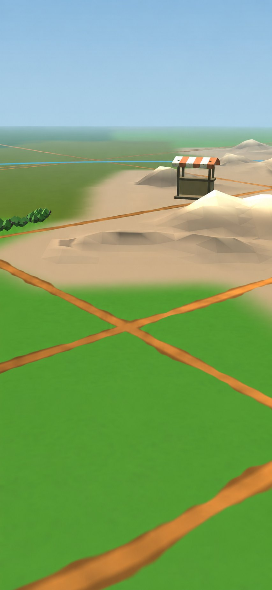

A playable mockup of catching a Wildling, one of the game's own creatures, from a sighting on the map to the lasso. The open parts are here as switchable options: what the player does while their Wildling dances, and how the scene shows it is working. The creatures are placeholder stand-ins: simple low-poly models with idle, walk and flourish animations of their own. Every number is a placeholder.
